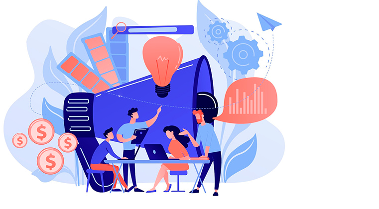
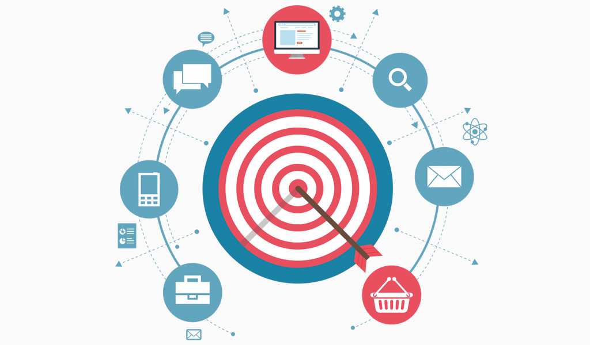
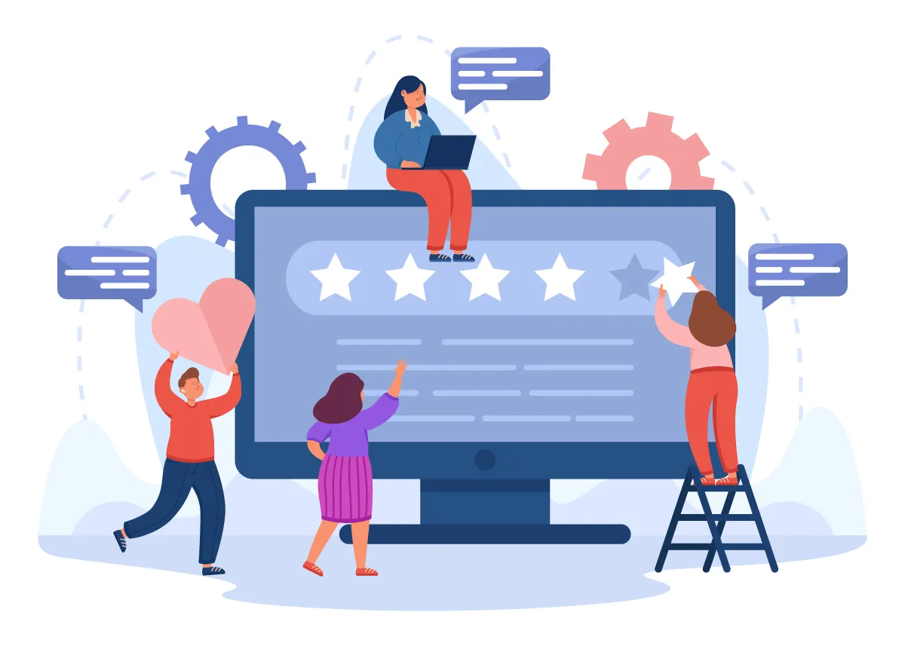

Специалист по связям с общественностью
Специалист по связям с общественностью - одна из самых динамичных и интересных профессий современности
Если вы ищите профессионала, который поможет выстроить и поддержать позитивный имидж вашей компании, организации или личного бренда, вы находитесь в нужном месте

Специалист по связям с общественностью - это профессионал, который занимается созданием, поддержанием и улучшением общественного имиджа компании, организации или отдельного лица.
Основная задача PR-специалиста - обеспечить, чтобы информация о бренде или личности была представлена в наилучшем свете, а также управлять кризисными ситуациями и предотвращать негативные последствия.

Разработка PR-стратегии
- Проведение анализа текущего состояния бренда
- Определение целей и задач PR-компании
- Разработка плана мероприятия и коммуникационных стратегий
Работа с медиа
- Подготовка и распространение пресс-релизов
- Организация пресс-конференций и медиа событий
- Установление и поддержание отношений с журналистами и блогерами

Управление репутацией
- Мониторинг упоминаний в СМИ и социальных
- Реагирование на отзывы и комментарии
- Работа с негативом и авнтикризисный PR
Контент-маркетинг
- Создание и продвижение качественного контента
- Разработка и ведение корпоративных блогов и социальных сетей
- Создание видеоконтента и инфографики
Внутренние коммуникации
- Поддержка корпоративной культуры
- Разработка внутренних новостных рассылок и корпоративных изданий
- Организация корпоративных мероприятий